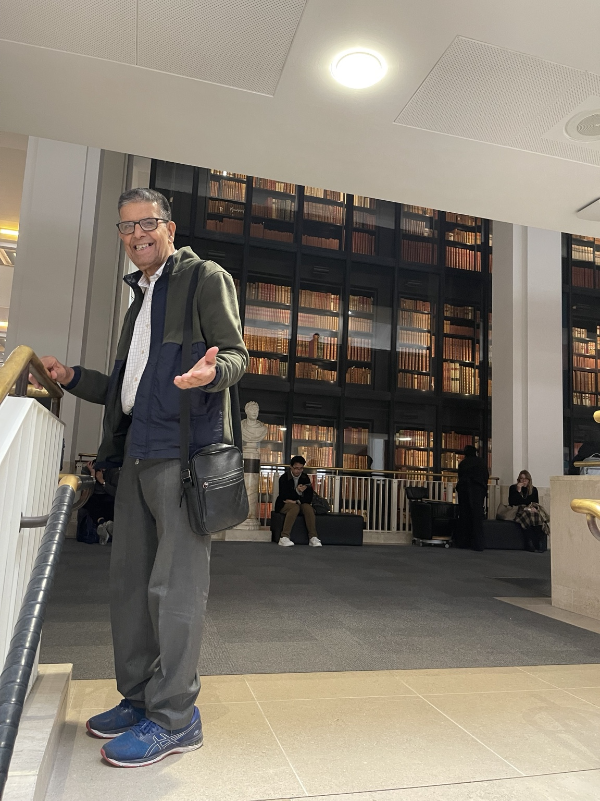
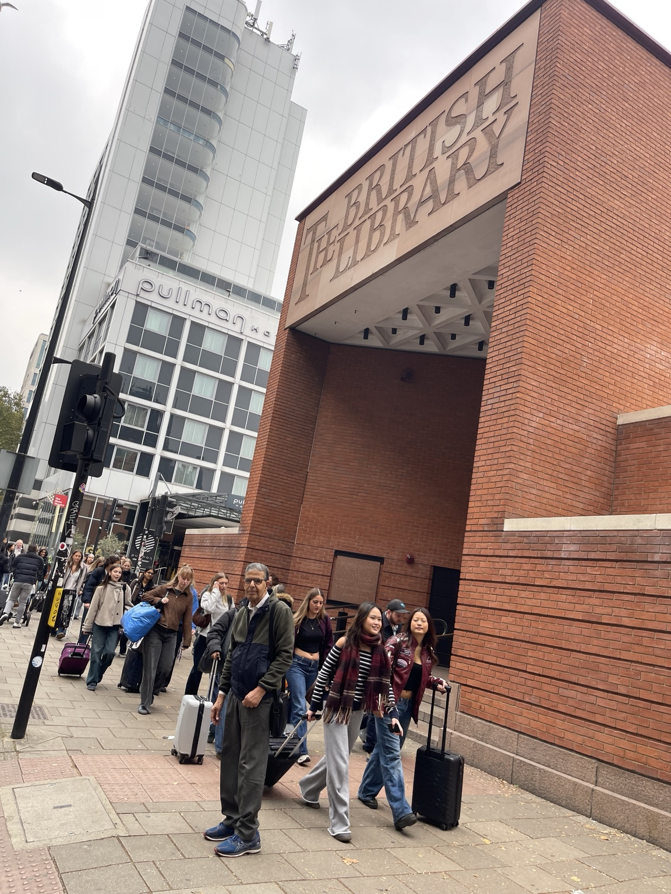
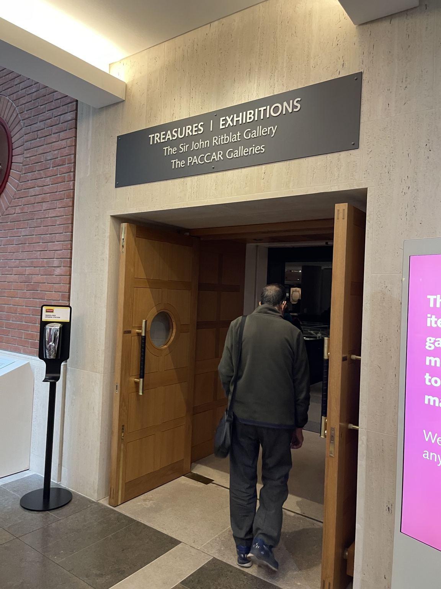
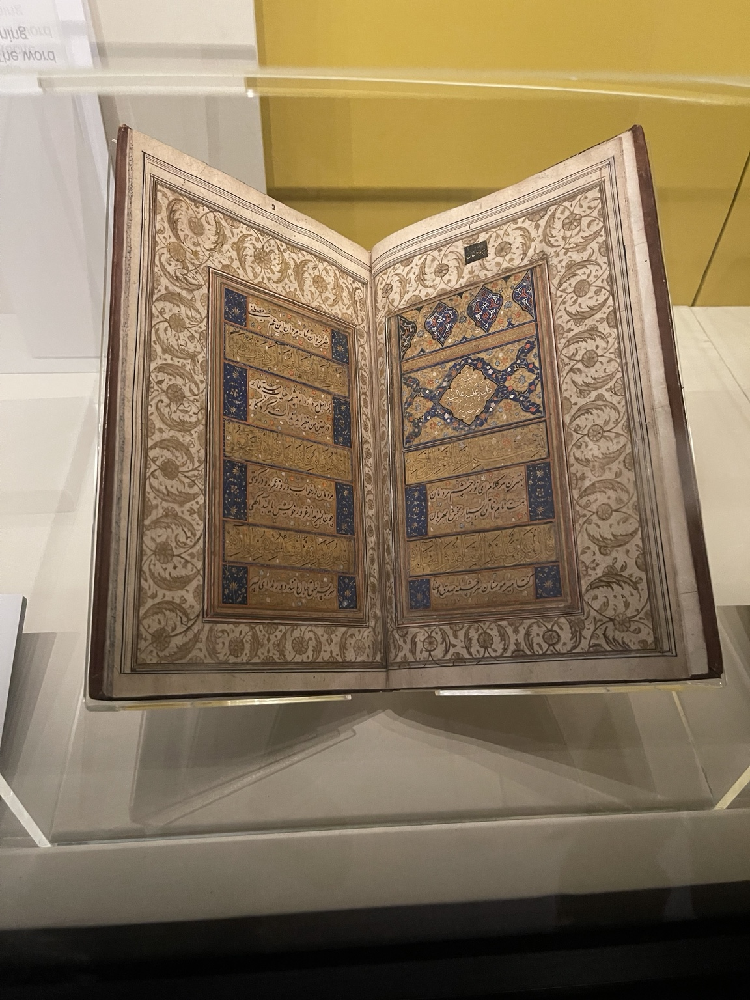
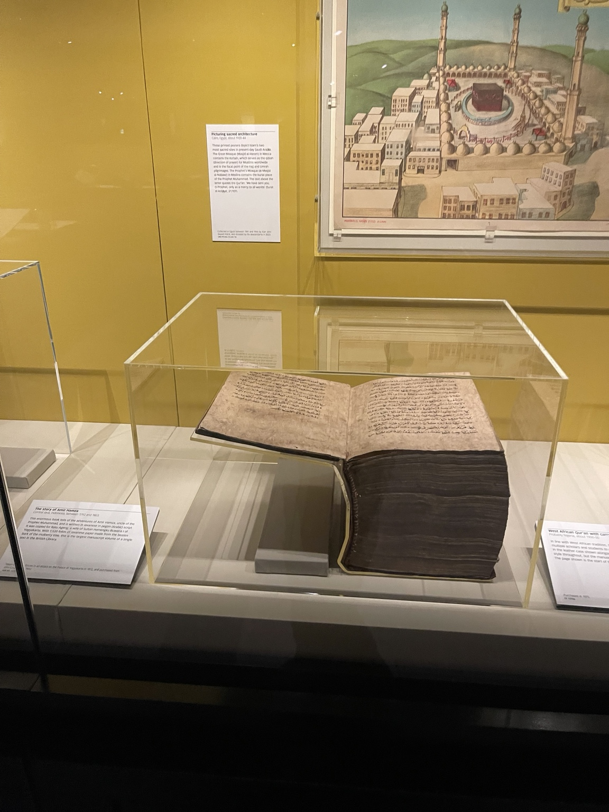
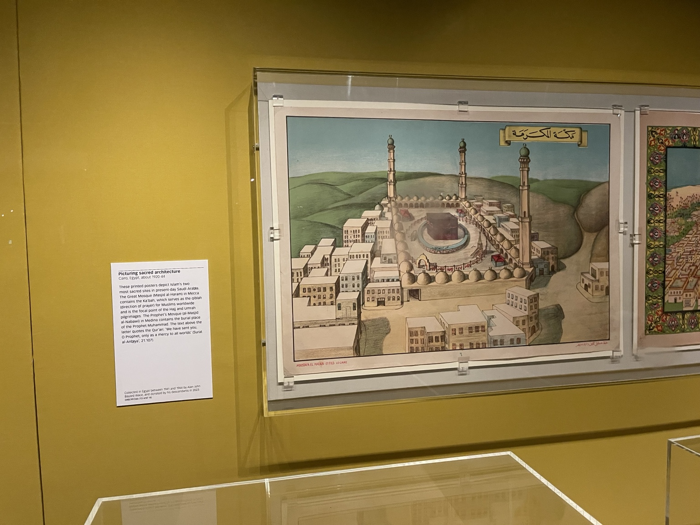
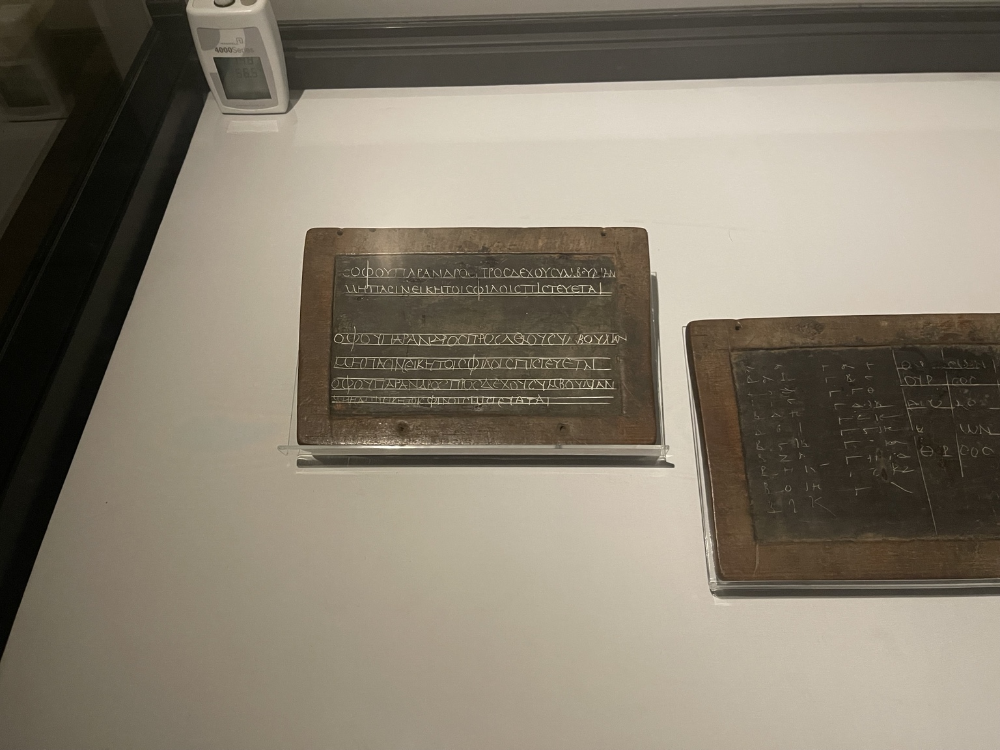
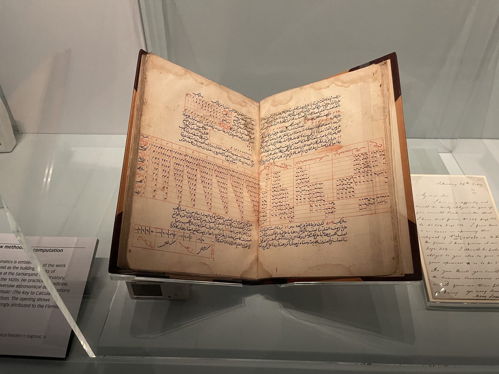
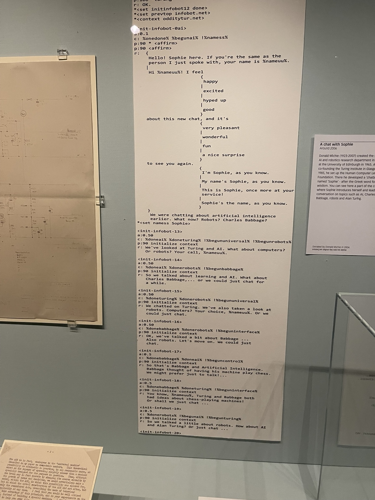
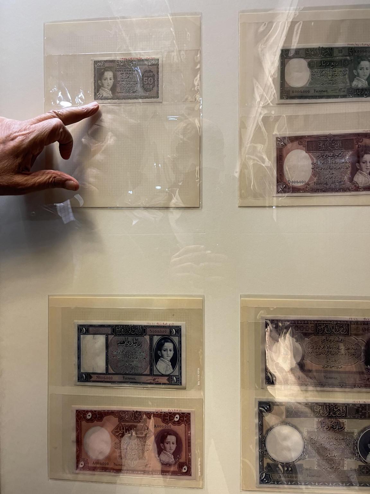

Stories / A library visit
A day at the
British Library.
On 6 November 2026, Muhammad Ali visited the British Library in London. These photographs follow a thread through the displays: the many forms a written record can take, from decorated manuscript pages and calculations to printed images, computer code and banknote designs.
-
London
At the library.
A portrait by the bookshelves and a view from the pavement frame the visit: Muhammad Ali inside and outside the British Library.

Inside the British Library, beside shelves of books. 
Muhammad Ali outside the British Library, 6 November 2026. -
The gallery entrance
Into the Treasures gallery.
A view towards the wooden doors beneath the “Treasures” and “Exhibitions” signs introduces the gallery displays.

At the entrance to the Treasures gallery. -
Lettering & decoration
Manuscript pages.
One photograph records calligraphy framed by blue and gold decoration. Another shows a thick manuscript opened beneath an illustration of Mecca. The pages and the physical form of the books share the frame.

Calligraphy and decoration within floral borders. 
An open manuscript beneath an illustration of Mecca. -
An illustrated view
Picturing Mecca.
A framed illustration shows the Kaaba and surrounding buildings in Mecca. The photograph includes its display label, headed “Picturing sacred architecture”.

An illustrated view of Mecca in the “Picturing sacred architecture” display. -
Lines & tables
Writing and calculation.
Two photographs focus on the organisation of marks on a surface: lines of writing on framed tablets, and numerical tables ruled across manuscript pages.

Two writing tablets, with lines and columns of characters. 
A manuscript of calculations, with tables ruled in red. -
Code & conversation
A chat with Sophie.
The photograph captures a long printout beside the label “A chat with Sophie”, showing code interspersed with conversational replies.

Code and conversational replies in the “A chat with Sophie” display. -
Currency designs
Iraq on paper.
The final photograph turns to currency designs. A hand points towards a note marked “Government of Iraq” and “50 Fils”, among mounted designs with Arabic lettering and portraits.

Iraqi banknote designs on display.
Photographs from Muhammad Ali’s visit · 6 November 2026
Choose any photograph to open the full-size image.